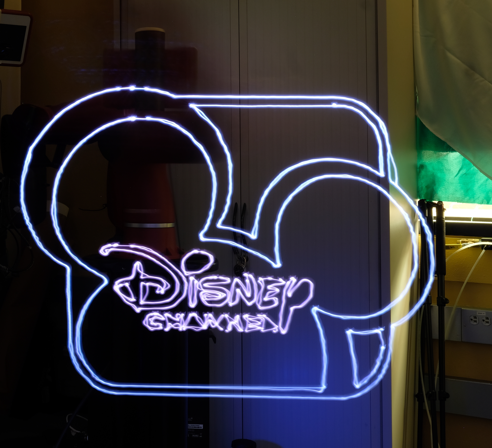
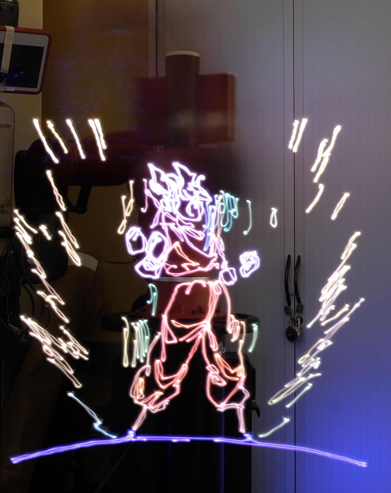
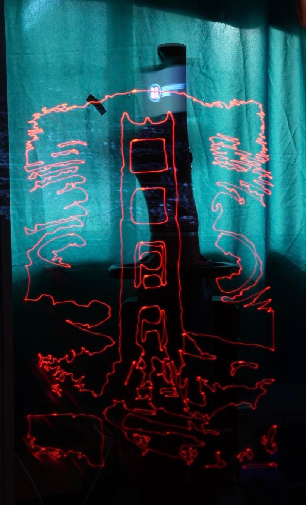
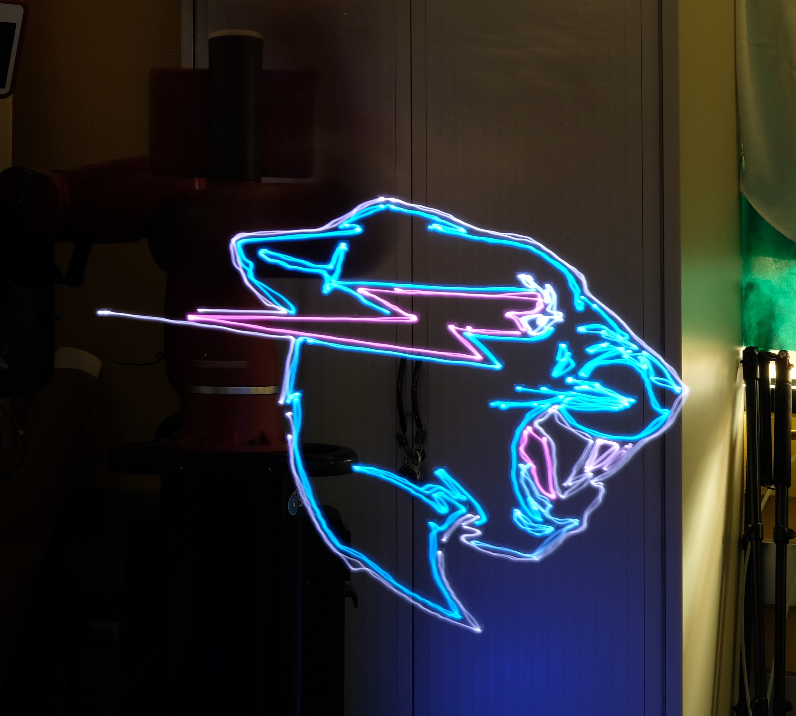
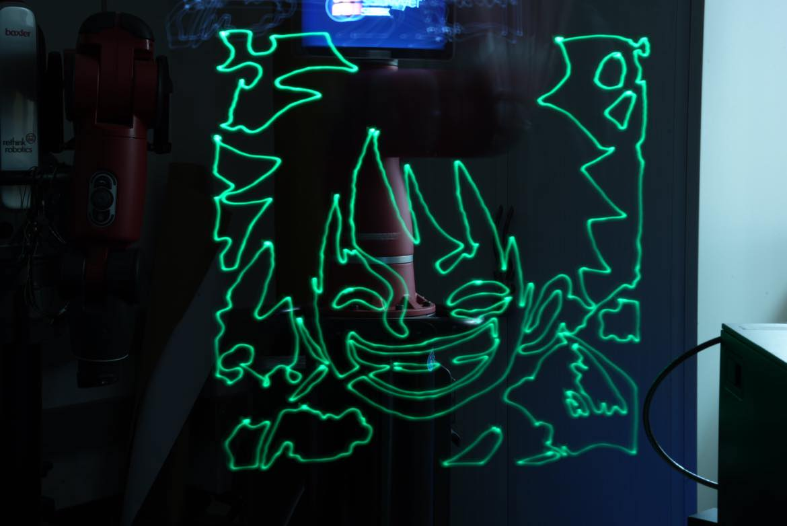
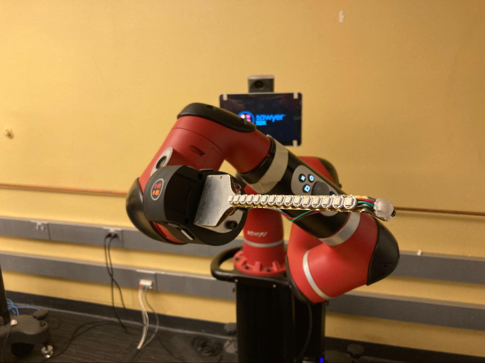
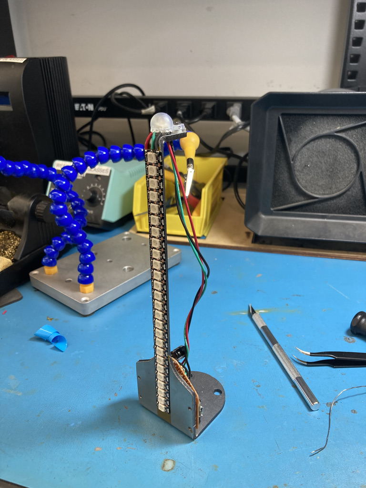
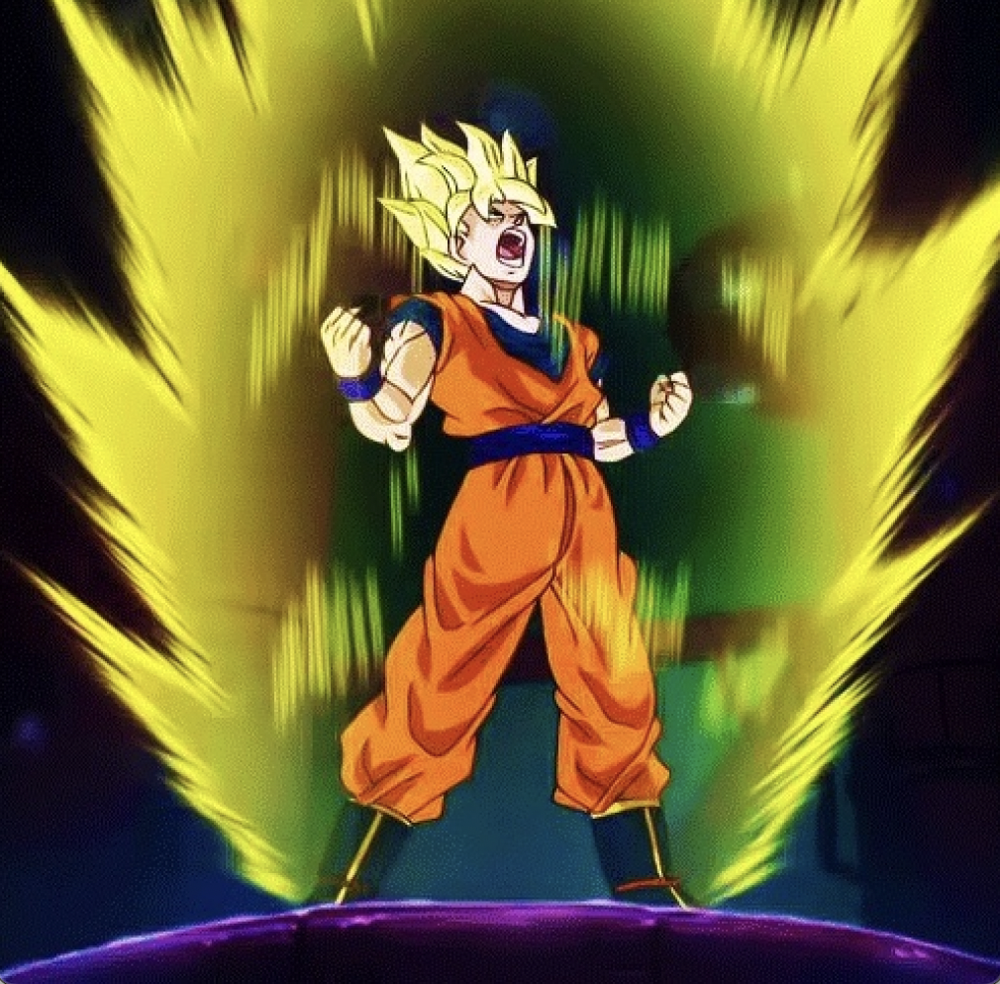

Light Drawer
|  |  |  |
|  |  |
Introduction
Project Goals
The end goal of our project was to program a robot to trace out a drawing using an RGB LED while we took a long exposure photograph. This would require our robot to be able to extract contour lines from an image, create appropriate plans, and follow a given path trajectory while actuating the end effector LEDs.
Why is this an interesting project?
The core goal of our project is to be able to extract salient contour features from visual sensory inputs and utilize these contour features to plan path trajectories for a robot end effector to draw light trails along. Light trail photography is a very popular field of photography but, for the most part, is limited to light trails of very simple geometries. It's very difficult for humans to sense and plan complicated path trajectories for themselves to draw light trails in 3D space. There's just simply not much sensory feedback to tell a person if they are drawing the correct shape in the correct space until they've seen the produced image. Our project aims to bridge the gap between artistic vision and light trail photography by utilizing precise and programmable movements of robots to draw light contours in 3D space. In order for us to make our solution work, we will need to figure out the following:
- Contour Extraction
- Path Planning
- Actuation of RGB LED end effector
Real World Applications
Our project lies very heavily in the creative field. Recently, there has been a big advent of computational art. Machines are able to come up with art that humans either can’t imagine or implement easily. Our project contributes to this up and coming field of computational art. Light drawing photography generally takes lots of training and expertise. Our project makes this easy and efficient. This sort of art can be implemented in many areas such as robotic photography or videography.
Design
Sensing
For the sensing criteria, our robot must be able to accept an input of an image and detect the salient edge features of the image. This input could come from a camera or a predetermined local image file. The design for this input preprocessing has to be robust to images of varying sizes and “busy-ness”. For example, an input might be of the form of a very large image of the real world with lots of small details and varying levels of exposure throughout the photo. The design of our input preprocessing must be able to scale the image appropriately and filter out small, noisy features. Additionally, the feature extractor has to be resilient to the different exposure levels found in the image caused by lights and shadows. To achieve this, we simply scaled the image by the ratio of it’s height to a maximum image height. Then we used an adaptive thresholding technique to extract contours. If we used a global thresholding technique, areas in sunlight would be included and any areas in shadow would be occluded. By using an adaptive threshold, sampled from neighboring pixels, we could pick up on edge features that exist in both light and dark better. We then filtered the features by size so that smaller, noisy features are excluded.
Planning
For the planning criteria, our robot must be able to take the feature list and create a path plan to draw the given contours. The path must be smooth, efficient, and closely resemble the features of the input image. To achieve this, we down sampled our feature points to reduce the path planning resolution. This helps smooth out features during drawing time at the expense of slightly softer corners. We then converted each feature into a list of Poses that MoveIt can use in its waypoint path planning api. Given the planned path from MoveIt, we then ran the path through a retiming API to adjust the velocity of the arm so that it is both smooth and efficient. Additionally for each contour, we precomputed the RGB light values that we wanted our end effector to emit during the drawing of the contour.
Actuation
For the actuation criteria, our robot must be able to follow the planned paths and draw the appropriately colored contour for any given feature. To do this, we kept a list of contour feature Poses and then planned then executed each of them individually. Between contours, we turned off the LED and planned a path for the robot arm to go from the last Pose of the last contour to the first Pose of the next contour. This allowed us to toggle and move our LED end effector as desired. However, this implementation doesn’t allow us to change LED values in the middle of executing a contour path.
Overall Choices
Overall, the design choices we made allowed our project to be incredibly adaptive, efficient, and they allowed our project results to be very reproducible. The techniques we used during path planning and execution allowed the robot to robustly and repeatedly plan and execute smooth contours.
Implementation
Hardware
The hardware consists of an array of RGB LEDs mounted on a steel bracket which is designed to mate with the Sawyer arm. The LEDs are all linked to an ESP32 microcontroller and can each be programmed individually through their index.
|  |  |
Parts
- ⅛” laser cut steel, bent
- Neopixel button LED
- Neopixel light strip (26 LEDs)
- 3D printed diffuser for tip light
- ESP32 microcontroller
- 470uC 16V Capacitor
- 3.3V-5V level shifter
- Protoboard
- Bolts (M2.5 and M3)
- Washers
- Laser cut acrylic spacers
Software
Workflow:
- An image is fed into our system either by being uploaded as a file or scanned in through a webcam.
- We then use CV2 to extract the contours using a canny edge detector. With this list of contours, we filter out only relevant contours (ones that are not too small) and we find the color of each contour by averaging all the points along each contour.
- We then create paths for each of these contours, as well as connecting paths in-between contours for the robot to follow.
- Our robot then executes each plan, toggling the LED on and off and adjusting the RGB accordingly for each contour until the entire drawing is replicated while our camera takes a long exposure photograph of the entire process.
Results
Video
Review
We were able to complete most of the goals we had set for this project. Our robot was able to replicate highly accurate light drawings of images we had either uploaded or shown the robot through a webcam. After extracting contours, the robot was able to trace paths of the relevant contours, toggling the RGB off in-between the contours and changing the RGB values accordingly so that each contour was colored correctly.
Conclusion
Meeting Design Criteria
In conclusion, our light drawing robot was able to meet most of our design criteria, except for one particular stretch goal (3D light drawings using multiple camera angles). The robot was able to (1) extract contours from images that were either uploaded as a file or read in through a webcam, (2) create a path trajectory, (3) actuate the RGB end effector to toggle on and off in between contours, as well as set the color accordingly.
Difficulties
Toggling the RGB LED in-between contours. In initial stages of the project, we were unable to turn the LED while it was traveling in between contours, leading to results as such: [include image of House or early Disney logo]. We realized that the issue was we were planning one large path and executing the whole thing. To resolve this issue, we planned and executed each contour path independently, allowing us to properly toggle the LED on and off. Understanding how to write to serial for the end effector took a bit of effort, but resulted in great drawings once we were able to figure this out.
Figuring out how to use MoveIt. At first we had opted to use our custom PID controller created in lab. However, this resulted in movements that were occasionally jerky. In light drawing, smooth and carefully drawn out lines are important for the end result, so once we were able to figure out how to use MoveIt to execute the path, we saw a huge improvement in our drawings.
Appropriately sampling waypoints along each path. In initial stages of our project we used all the waypoints fed back to us by the path planner. This led to the arm shaking a lot as it was too fine grained. By sampling only a few points along each path, we were able to smoothen out the trajectory of the end effector.
Improvements
Enable the robot to create 3D light drawings using multiple camera angles/perspectives. If we were able to feed the robot images of 3D images such as a cube and give it multiple camera angles, it would be possible to reconstruct a 3D light drawing of the cube.
Improve our edge detection algorithm. Currently we use a canny edge detection algorithm, and while that works pretty well there are some imperfections. For example in this image of Goku, we can see that some of the contour lines are green when in actuality you’d expect the color to be yellow. Furthermore, we can see that some of his shoe is cut off and that is due to the color differences not being enough for algorithm to detect an edge.
|  |

|

|
Be able to “color-in” images with RGB LED strips. All of our current light drawings are simply the contour lines of the image. In actuality, these images / drawings have color filling them in. With an LED strip, we would be able to “sweep” across the image and effectively “paint in” the areas in between contour lines.
Team
Alexander Yu
Senior studying EECS, previous experience from EECS16B working on voice controlled car (but remote version of lab). Alex was in charge of setting up the camera to take the long exposure photo, as well as the contour extraction portion of the project.
Adam Rashid
Junior studying EECS, current experience building solar race car with club Cal Sol and doing robotic learning research in AutoLab under Professor Ken Goldberg. Adam led the path planning portion of the project.
Cameron Chaney
Senior studying Mechanical Engineering. Previous experience in various internships working with mechatronic systems, as well as controls knowledge from ME132. Cameron was in charge of creating and programming the end effector.
Ryan Huang
Senior studying EECS, previous experience from EECS16B working on voice controlled car. Ryan assisted in the path planning and contour extraction portions of the project.
Additional materials
Codebase and CAD files can all be found on our Github Repository